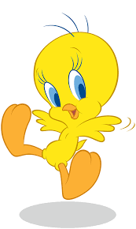

About Tweety Bird
Tweety Bird is a yellow canary who is apart of the Looney Tunes group. He's appeared on many big screens but his first big screen appearance was in 1941!
Tweety jumping for joy because you came to this site!
Characteristics
- He has big blue eyes.
- He is very clever.
- You can always catch him saying "I tawt I taw a putty tat!"
Enemy
Click on the link to watch a video of them fighting.
Friends
- Granny
- Hector the bulldog
- Bugs Bunny
- Daffy Duck